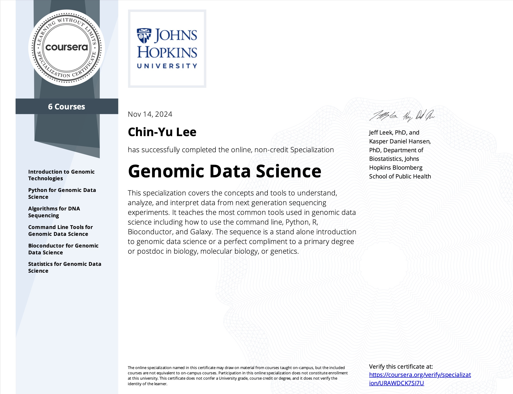
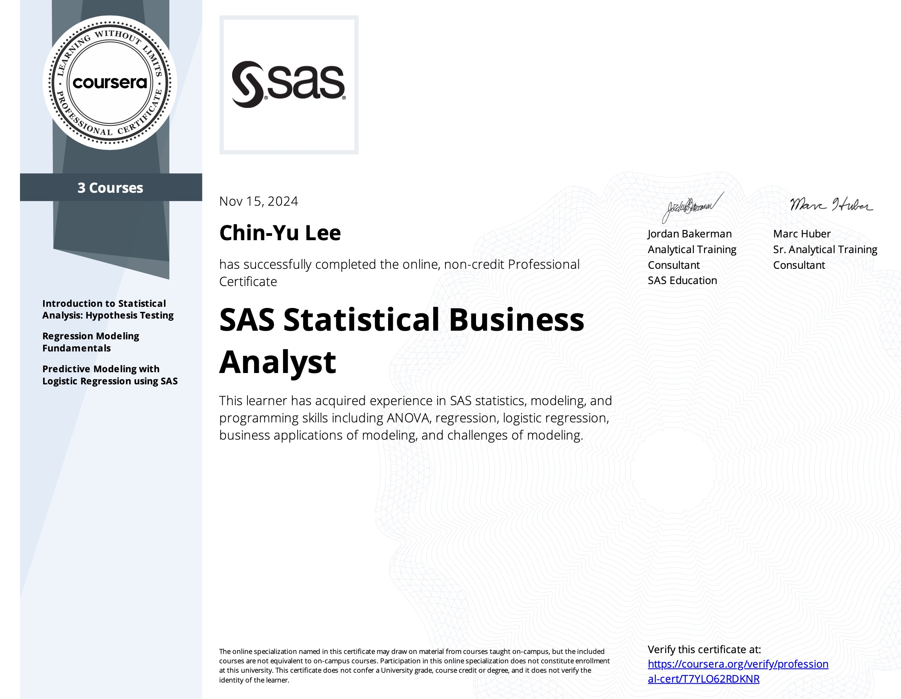
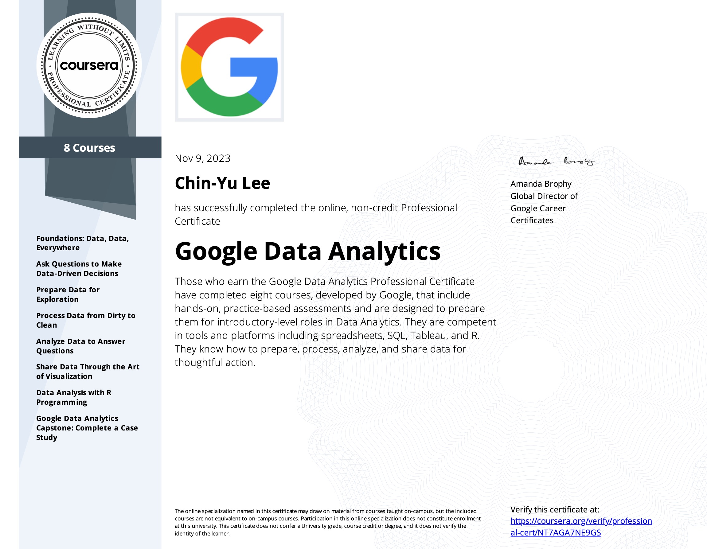
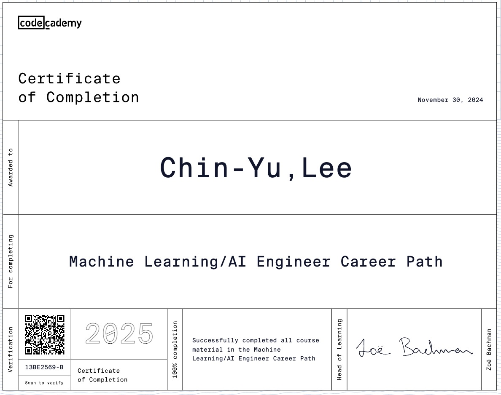
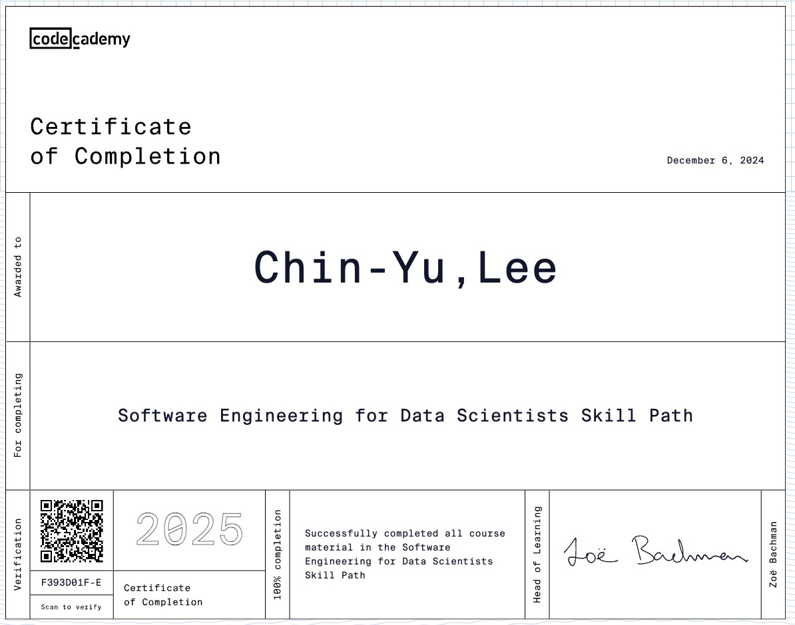
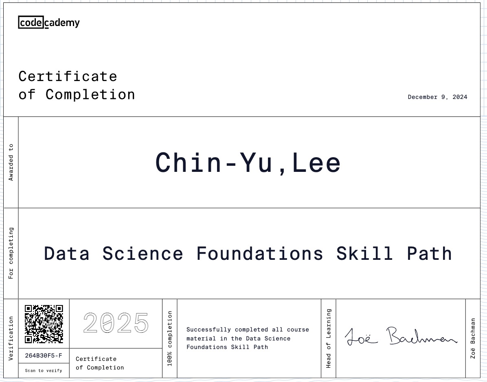
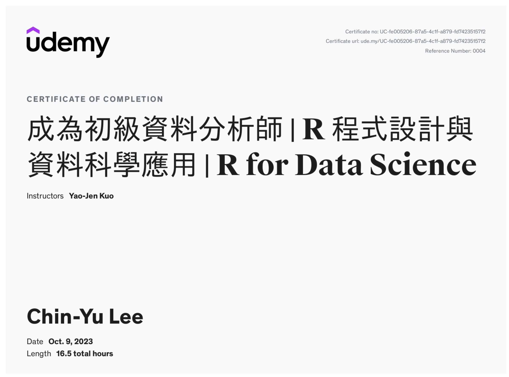

About Me
My name is Ching-Yu Lee, and I graduated from Taipei Medical University with a degree in Medical Laboratory Science and Biotechnology. I am a licensed medical technologist and hold a master’s degree in Toxicology from National Taiwan University. My research focused on using iPSCs to study the combined effects of heavy metals and PAHs on East Asian lung cancer. I specialize in bioinformatics, including RNA-seq, scRNA-seq, and methylation array analyses, and I am skilled in tools like R, Linux, and NGS pipelines. With a strong background in lab operations, data analysis, and programming, I aim to integrate bioinformatics and AI to advance precision medicine and contribute to the biotechnology industry.
Education
National Taiwan University
Master’s Degree in Toxicology Graduate Institute
Taipei Medical University
Bachelor’s Degree in Medical Laboratory Science and Biotechnology
Experience
Dec 2024
my exp
Skills
here

Portfolio
RNAseq analysis
My thesis project focused on using RNAseq data to identify the best treatment for patients with lung adenocarcinoma.
Certifications
Medical Technologist License
here

Genomic Data Science
here

SAS
here

Google Data Analytics
here

Machine Learning
here
Deep Learning
here

Data Science Engineer
Completed advanced training in bioinformatics, specializing in RNA-seq and scRNA-seq data analysis using R and Linux.

Data Science
here

R
here